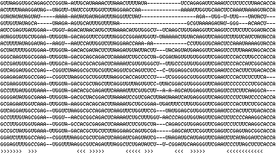

(95) RNA の構造を考慮したアライメントプログラム
マ シ ン：PIM/UNIXマシン
環 境：PIMOS/UNIX, KLIC
言 語：KL1
ソース量：0.3 MB
文 書：マニュアル (日本語 / 英語)
概要
ステム構造を考慮した複雑な評価値を温度並列シミュレーテッドアニーリング
を用いて最適化し、アライメントの精緻化をする。
特徴
RNA のステム構造に現れる相補的突然変異に基づく評価値を最適化しながら、
アライメントの精緻化をするプログラムである。並列反復改善法 (IFS No75)
などで、暫定的な RNA 配列のアライメントをした後に用いる。このプログラ
ムの実行結果は、RNA の立体構造解析や系統解析に有効なデータを提供する。
機能
PIM／p 256台構成において、tRNA 22本のアライメント (下図) が 12時間程で
解決できる。その結果から、tRNA に特有なステム構造が抽出できる。
本システムはKLIC処理系により、UNIX オペレーティング・システムの基本部
分が動作する計算機システム上で動作可能である。

ＦＴＰ
- RNA の構造を考慮したアライメントプログラム [162K]

www-admin@icot.or.jp